3. Small Parts Production
วัตถุประสงค์การเรียนรู้
- เปิดโมเดลตัวอย่าง Small Parts Production และรันเทียบไลน์เดิมกับไลน์ที่ปรับแล้วได้
- หาคอขวดของไลน์ประกอบด้วย Station Utilization, Bottleneck Analyzer และ Ranking ได้
- หาขนาด Buffer ที่พอด้วย Experiment Manager และอ่านผลพลังงานจาก Energy Analyzer ได้
โมเดลตัวอย่างตัวที่สองต่อจาก 00A Factory 51 — ยังไม่ต้องสร้างอะไรเอง แค่เปิดไลน์ประกอบชิ้นงานเล็กที่ Siemens ทำไว้แล้ว และลองใช้เครื่องมือวิเคราะห์ทีละขั้น 10 ขั้นตอน: รันไลน์เดิม ดูกราฟ หาคอขวด เพิ่ม Buffer หาขนาด Buffer ที่พอด้วย Experiment Manager และดูการใช้พลังงาน ให้เห็นภาพว่าเรียนจบชุดสอนแล้วจะวิเคราะห์ไลน์จริงได้แบบไหน (บท 01–09 จะสอนสร้างและวิเคราะห์ไลน์ของตัวเองทีละเรื่อง)
สิ่งที่ต้องมี: Plant Simulation 2606 และโมเดล
Small Parts Production.spp (อยู่ใน Examples\Demo
ของโฟลเดอร์ติดตั้ง) · ผลที่วัดได้ใน 2606: ผลผลิต 1,400 → ~1,460 ชิ้น/วัน (Assembly1 → Assembly2)
ลำดับการวิเคราะห์
| ลำดับ | งาน | ทำอะไร | ใครทำ |
|---|---|---|---|
| 1 | รันไลน์เดิม | Assembly1 รัน 1 วัน ดู Throughput และพลังงาน | ผู้ใช้ |
| 2 | ดูกราฟ | Station / Worker Utilization และกะทำงาน | ผู้ใช้ |
| 3 | หาคอขวด | Bottleneck Analyzer + Ranking | Plant Sim |
| 4 | เพิ่ม Buffer | Assembly2 มี Buffer หน้า MS4 | ผู้ใช้ |
| 5 | หาขนาด Buffer | Experiment Manager 8 การทดลอง | Plant Sim |
| 6 | ดูพลังงาน | Energy Analyzer + สายพานหยุดอัตโนมัติ | Plant Sim |
ขั้นที่ 1: เปิดโมเดลตัวอย่าง Small Parts Production
- 1
File → Openแล้วเลือก...\Plant Simulation 2606\Examples\Demo\Small Parts Production.spp - 2Class Library →
Modelsมี Assembly1 (ไลน์เดิม) และ Assembly2 (เพิ่ม Buffer) - 3แถบ The model contains outdated libraries กด
Xปิดได้ บทนี้ไม่ต้องอัปเดต - 4Frame เปิดเป็นหน้าต่าง 3D มุมมองจากด้านบน (2606 ไม่มีหน้าต่าง 2D แยก)
- 5Assembly2 เปิดซ้อนอยู่ด้านหลัง ปิดไว้ก่อนได้
ข้อควรจำ: ไฟล์ใน Program Files บันทึกทับไม่ได้ — ถ้าจะแก้ให้
File → Save As ไปโฟลเดอร์งานของตัวเองก่อนขั้นที่ 2: รัน Assembly1 แล้วดู Throughput
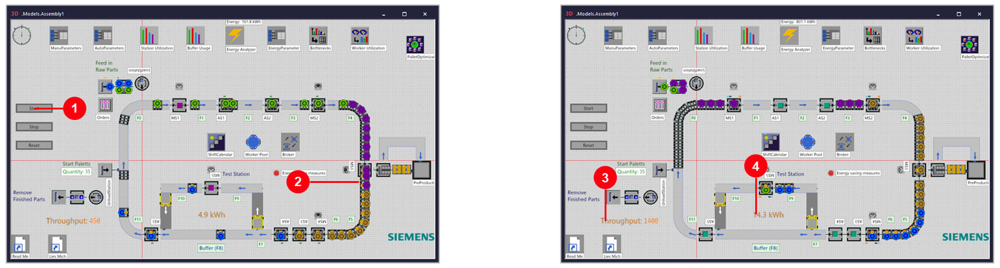
- 1กด
Startในโมเดล (รันจบ 1 วันทันที) หรือ ▶ ที่Home → Event Controllerถ้าอยากเห็นชิ้นงานวิ่ง - 2ระหว่างรัน ชิ้นงานต่อคิวยาวหน้า MS3 / MS4
- 3จบ 1 วัน: Throughput 1,400 ชิ้น
- 4พลังงานทั้งไลน์ 14.3 kWh (Energy saving measures = ปิด, จุดแดง)
ขั้นที่ 3: Station Utilization — สัดส่วนเวลาของทุกสถานี
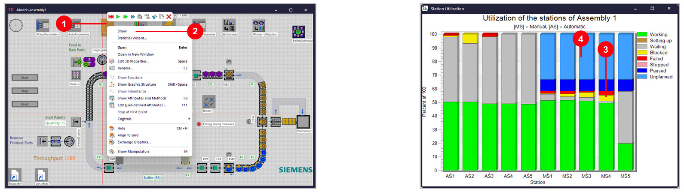
- 1คลิกขวาที่
Station Utilization - 2เลือก
Show - 3MS4 Waiting ต่ำสุด 1.4% และ Failed สูงสุด 3.3% → งานไม่เคยขาด = คอขวด
- 4MS1–MS5 เป็นสถานีคน ทำงาน 2 กะ จึงมี Unplanned 33% (สีฟ้า)
ขั้นที่ 4: Worker Utilization และ ShiftCalendar
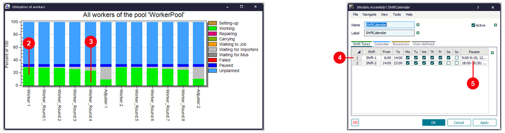
- 1คลิกขวา
Worker-Utilization→View Chart - 2Worker / Worker_Round: Working ประมาณ 25–29%
- 3Adjuster (ช่างปรับเครื่อง) ทำงานน้อย รอเป็นส่วนใหญ่
- 4ดับเบิลคลิก
ShiftCalendar: Shift-1 06:00–14:00, Shift-2 14:00–22:00 - 5คอลัมน์
Pauses= เวลาพักในแต่ละกะ
ขั้นที่ 5: Bottleneck Analyzer — Show Analysis
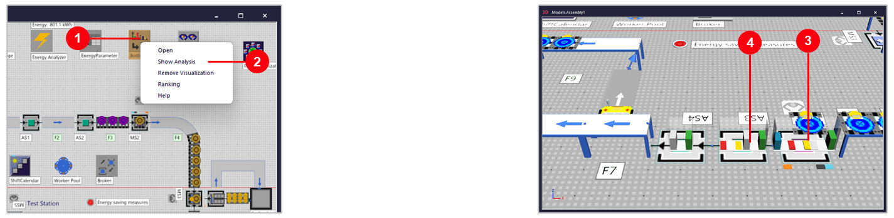
- 1คลิกขวาที่
Bottlenecks - 2เลือก
Show Analysis - 3แท่งสีขึ้นบนทุกสถานี: เขียว Working, เทา Waiting, เหลือง Blocked, แดง Failed
- 4MS4 แท่งเขียวสูง แทบไม่มีสีเทา ต่างจาก AS3 / AS4 ที่สีเทาสูง
ขั้นที่ 6: Ranking — เรียงตารางหาคอขวด
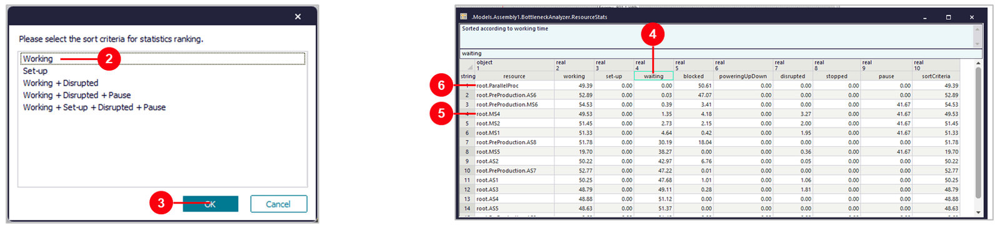
- 1คลิกขวา
Bottlenecks→Ranking - 2เลือกเกณฑ์
Working - 3กด
OKได้ตารางResourceStats - 4คลิกขวาหัวคอลัมน์
waiting→Sort Ascending - 5MS4, MS2, MS1: waiting ต่ำ + blocked ต่ำ = คอขวด
- 6ParallelProc / AS6: waiting ต่ำแต่ blocked สูง = ถูกปลายทางบล็อก ไม่ใช่คอขวด
ขั้นที่ 7: Assembly2 — เพิ่ม Buffer หน้า MS4 แล้วเทียบผล
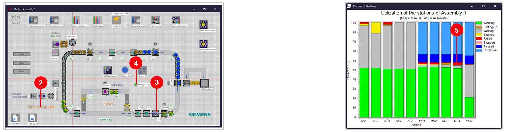
- 1ดับเบิลคลิก
Models → Assembly2ใน Class Library แล้วกดStart - 2Throughput ~1,460 ชิ้น (วัดได้ 1,462–1,466 จาก 4 รอบ; Assembly1 = 1,400)
- 3Buffer B (
Buffer1) อยู่ระหว่าง AS3 กับ MS4 - 4Energy saving measures เปิด (จุดเขียว)
- 5Station Utilization: MS4 ไม่มีสีเหลือง (Blocked) แล้ว (หัวกราฟยังเขียน Assembly 1 ตามตัวอย่างของ Siemens)
ขั้นที่ 8: BufferOptimization — กำหนด Output, Input และ Experiments
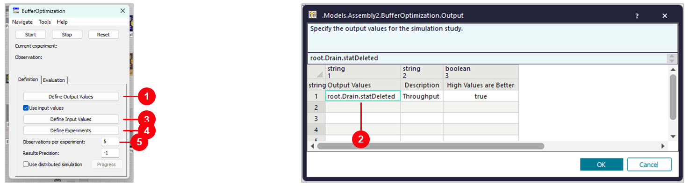
- 1ดับเบิลคลิก
BufferOptimization(Experiment Manager) →Define Output Values - 2
root.Drain.statDeleted= Throughput,High Values are Better= true → OK - 3
Define Input Values(ภาพถัดไป) - 4
Define Experiments(ภาพถัดไป) - 5
Observations per experiment= 5 (รันซ้ำ 5 รอบต่อการทดลองแล้วเฉลี่ย)
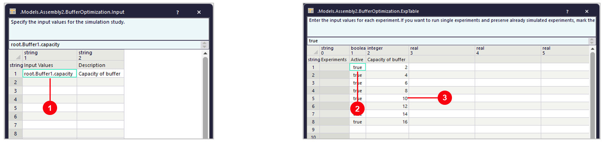
- 1
root.Buffer1.capacity= ความจุของ Buffer B → OK - 2
Active= true ทุกแถว = รันทุกการทดลอง - 3Capacity of buffer 2, 4, 6 … 16 รวม 8 การทดลอง → OK
ทำซ้ำ: อยากทดลองค่าอื่น แก้ตัวเลขในคอลัมน์ Capacity of buffer หรือเพิ่มแถวได้เลย
ขั้นที่ 9: รันการทดลอง และอ่าน Report
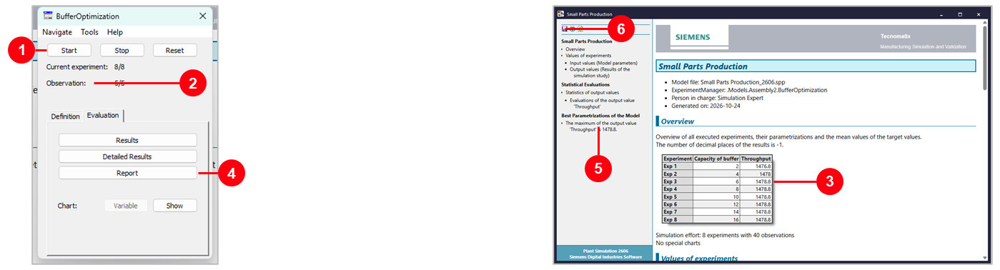
- 1กด
Startรอข้อความ The experiment run is finished (ประมาณ 10 วินาที) → OK - 2ครบ 8/8 การทดลอง 5/5 รอบ
- 3Buffer ตั้งแต่ 6 ขึ้นไป = 1,478.8 ชิ้น (เฉลี่ย) ค่าเท่ากันหมด → 6 ก็พอ
- 4Report เปิดเองหลังรันจบ หรือกด
Evaluation → Report - 5สรุปค่าที่ดีที่สุด: Throughput สูงสุด 1,478.8
- 6บันทึก / พิมพ์ Report จากปุ่มมุมซ้ายบน
ขั้นที่ 10: Energy — ตั้งค่าพลังงานของสายพาน และอ่าน Energy Analyzer
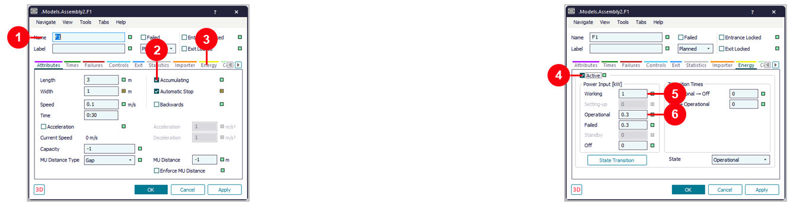
- 1ใน Assembly2 ดับเบิลคลิกสายพาน
F1 - 2
Automatic Stop= สายพานหยุดเองเมื่อว่าง (ตัวที่ทำให้ประหยัดไฟ) - 3คลิกแท็บ
Energy - 4
Active= นับพลังงานของวัตถุนี้ - 5
Working1 kW ขณะลำเลียง - 6
Operational0.3 kW ขณะเปิดรอ
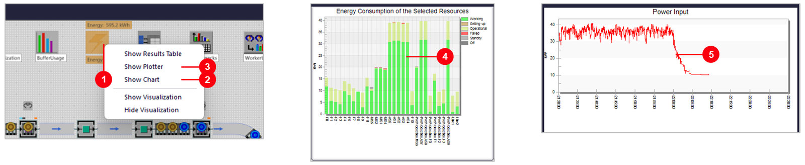
- 1คลิกขวา
Energy Analyzer - 2
Show Chart= พลังงานแยกตามวัตถุ - 3
Show Plotter= Power Input ตามเวลา - 4สถานีอัตโนมัติ AS / PreProduction ใช้ไฟมากสุด
- 5หลัง 22:00 (หมดกะ) Power Input ลดจาก ~37 kW เหลือ ~10 kW
ผล: Assembly2 ใช้ 11.6 kWh เทียบ Assembly1 14.3 kWh (ลด ~19%) ในขณะที่ได้ชิ้นงานมากขึ้น
สรุปผล: Assembly1 เทียบ Assembly2 (วัดใน 2606)
| หัวข้อ | Assembly1 (ไลน์เดิม) | Assembly2 (ปรับแล้ว) | หมายเหตุ |
|---|---|---|---|
| Throughput / วัน | 1,400 ชิ้น | 1,462–1,466 ชิ้น | รัน 1 วัน, 4 รอบ |
| พลังงาน / วัน | 14.3 kWh | 11.5–11.6 kWh | ลด ~19% |
| Buffer หน้า MS4 | ไม่มี | B (Buffer1) | ขนาด 6 ก็พอ (ขั้นที่ 9) |
| Energy saving measures | ปิด | เปิด | สายพาน Automatic Stop |
| คอขวด | MS4 (Waiting 1.4%) | MS4 ไม่ Blocked แล้ว | ดูขั้นที่ 3, 6, 7 |
ปัญหาที่พบบ่อย และวิธีแก้ (2606)
| อาการ | วิธีแก้ |
|---|---|
| กด Start ในโมเดลแล้วจบทันที ไม่เห็นชิ้นงานวิ่ง | กด Reset แล้วใช้ ▶ ที่ Home → Event Controller (Real time) ปรับความเร็วด้วยแถบเลื่อน |
| Show Analysis แล้วมองไม่เห็นแท่ง | แท่งเป็น 3D มองจากด้านบนจะแบน → เอียงมุมกล้อง / ซูมเข้า |
| แถบ The model contains outdated libraries | กด X ปิดได้ บทนี้ไม่ต้อง Manage Libraries |
| Plotter แสดงแค่ช่วงสั้นๆ | เปิด Plotter ไว้ระหว่างรัน แล้วหยุดในช่วงเวลาที่สนใจ |
| Throughput ของ Assembly2 ไม่ตรงกับหน้านี้ | ปกติ ต่างได้ไม่กี่ชิ้นต่อรอบ ใช้ Experiment Manager ที่เฉลี่ยหลายรอบ |
| บันทึกโมเดลไม่ได้ | ไฟล์อยู่ใน Program Files → File → Save As ไปโฟลเดอร์ของตัวเอง |
คำถามฝึกคิด: ในขั้นที่ 6 ทำไม ParallelProc / AS6 ที่ waiting ต่ำเหมือน MS4 จึงไม่ใช่คอขวด?
เฉลย: เพราะ blocked สูง — เครื่องทำเสร็จแล้วแต่ส่งต่อไม่ได้ แปลว่าปัญหาอยู่ที่ปลายทาง ไม่ใช่ที่ตัวมันเอง
คอขวดจริงต้อง waiting ต่ำ และ blocked ต่ำ (ทำงานตลอดเวลา) แบบ MS4 — ใช้หลักเดียวกันนี้ในบท 02 คอขวด และ ParallelStation